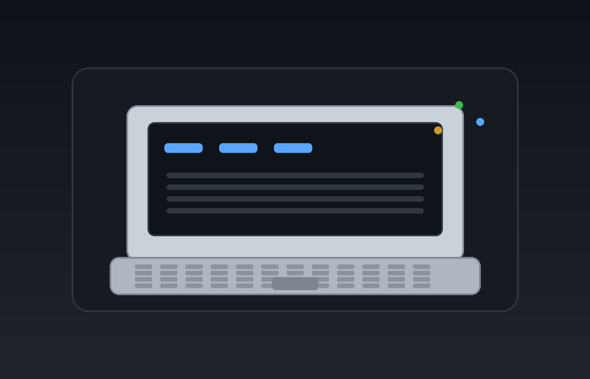

I tested Linux and Android builds on the EeePC 1016P to document what actually worked, what apps still ran, and where the Intel Atom N455 CPU became the hard limit.

A fresh install of 7.1 R5 beat every Linux and Android alternative tested. Smart Dock from F-Droid made the laptop much easier to use.
See Android resultsLinux Mint 32-bit gave a modern desktop, MX felt dated but responsive, antiX had good hardware support, and Kali made sense only as a terminal and network-tools box. DRM and CPU limits hurt media use across the board.
See Linux resultsThese builds were too heavy for the Atom N455. They loaded poorly, crashed, and could not be fully tested. The main limitation was CPU, not just RAM.
Read full findings